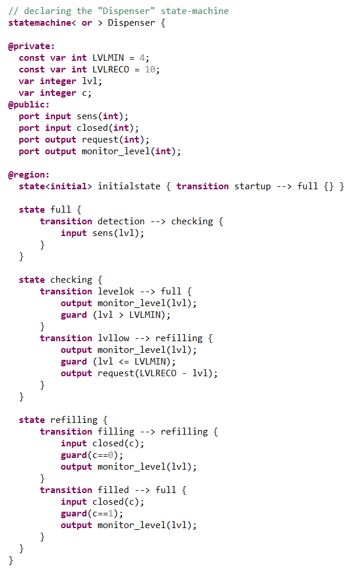
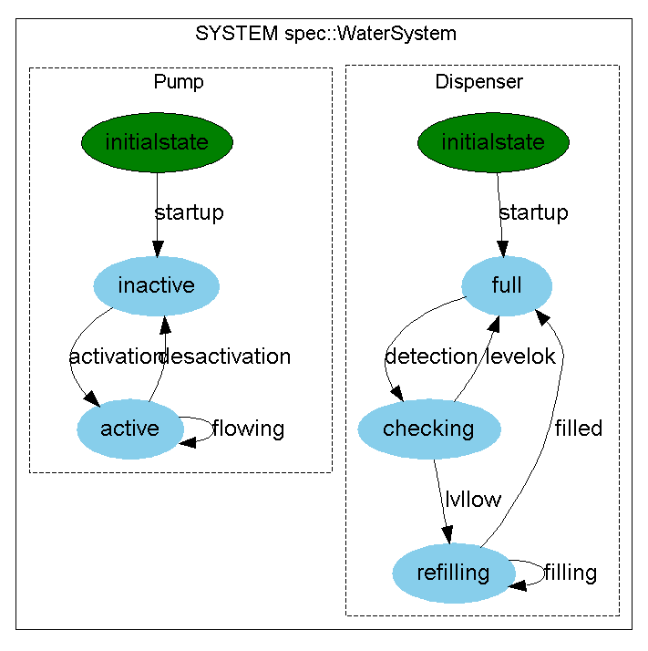
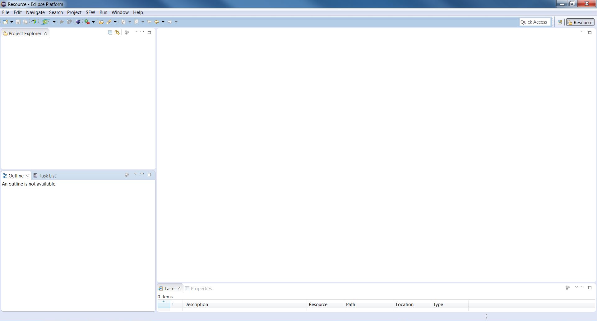
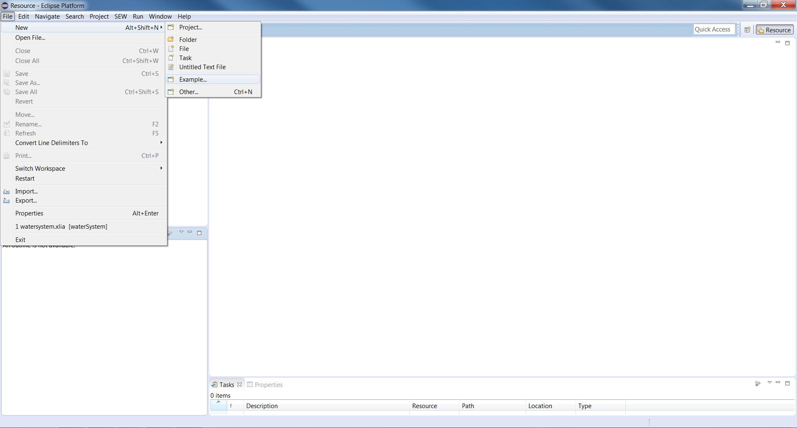
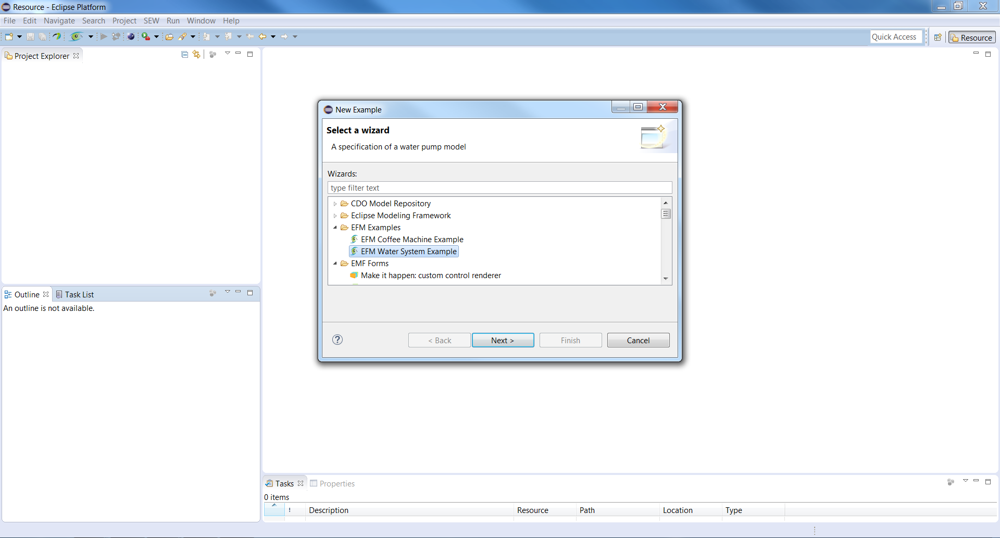
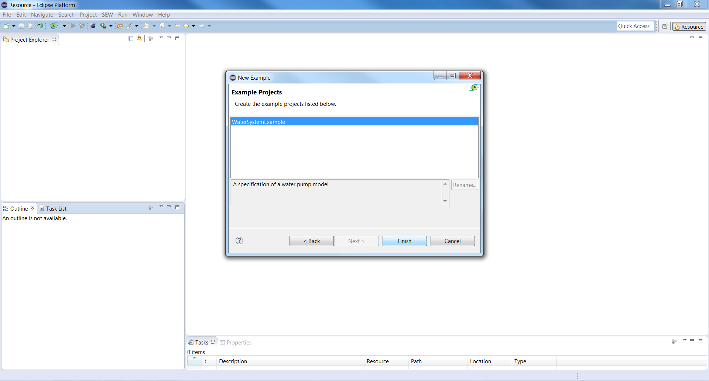
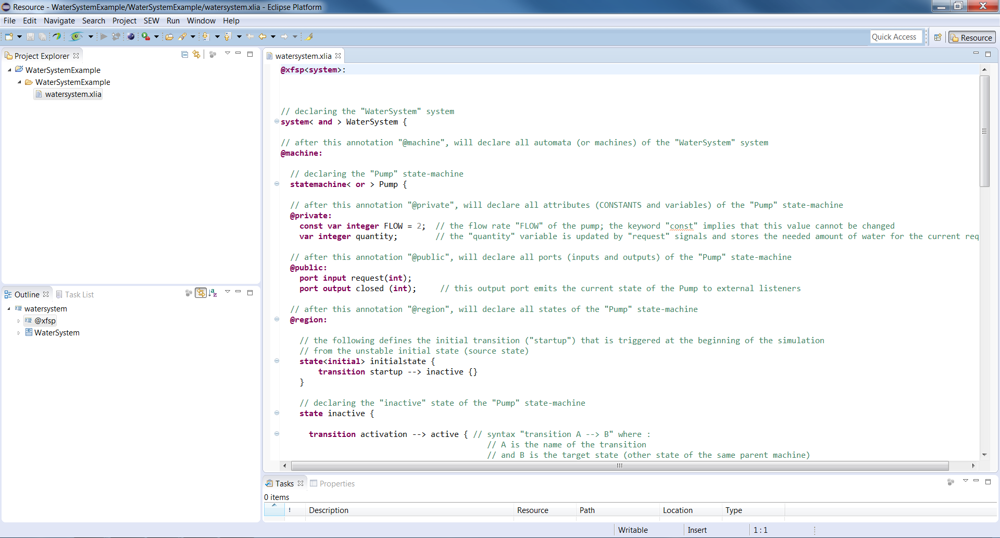

In the same fashion, we define the Dispenser automaton. We also added a new output port : "monitor_level" which retransmits the current level of water at each transition.
There are other keywords and concepts in XLIA such as clocks, timed guard ... but we won't discuss those in this present tutorial.
One last thing is left to do : connecting the ports we have defined earlier. To do that, in the same level as the "@machine:" annotation of the beginning, we will list our communications declarations after a "@com:" annotation (see picture)
To distinguish between two kinds of communications, we'll use two different flags to declare them :
We've now build a fully working system with XLIA :
You can retrieve the complete code by following the steps described in the pictures below :
    